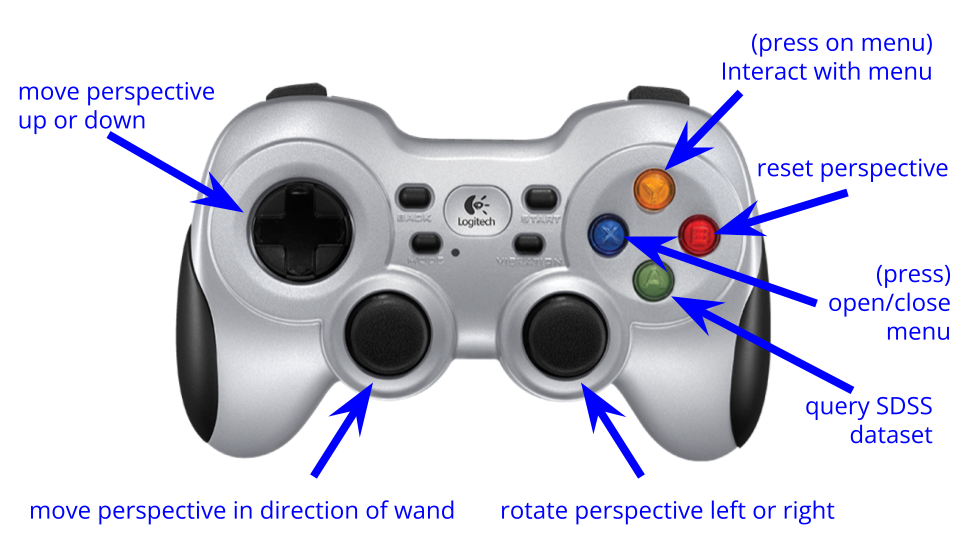

SDSS tour

How to run
You can run this software through the Unity app launcher, its title is VizLabSDSSTour. Please consult the quick-start guide if you are having trouble!
How to control
{kind=link}
The key feature of this software is the ability to press the green button on any galaxy in the dataset and have its image and spectrum brought up. This is accomplished through HTTP requests to SDSS’s image cutout and spectrum services.

The science
The data in this software comes from SDSS DR17, and involved taking ~600k galaxies from SDSS surveys and use their Monte Carlo Physarum Machine (MCPM) model - inspired by how slime molds grow and develop - to estimate the matter density at each target galaxy. Through this system, the researchers were able to estimate the cosmic web throughout their galactic system.
For more information, please consult the relevant publication, its VAC landing page and its data model.
Figure 3 in the paper is useful for contrasting how the data looks in a flat 2D context versus on the VizLab!